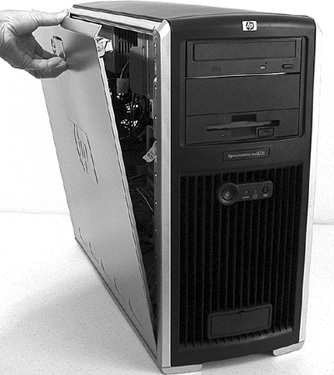
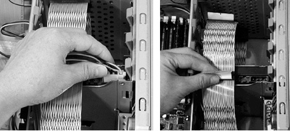
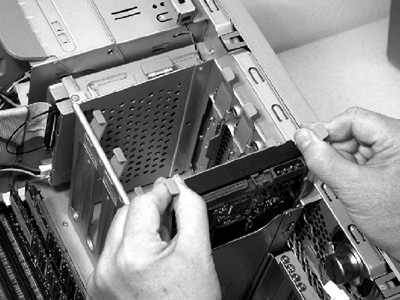
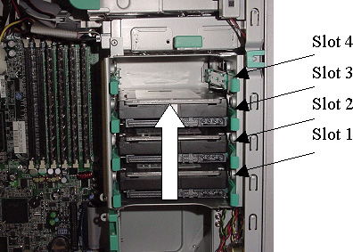

Operating Documentation
Direction 5114045-800, Rev# 10
LightSpeed 4.X Service Information (Advanced)
Operating Documentation |
| Required Persons | Preliminary Reqs | Procedure | Finalization |
|---|---|---|---|
| 1 | Timing Not Applicable |
This optional procedure is used when retaining the original hard drives in a failed HP Host Computer (xw8000 or xw8200). ALL drives must be swapped at once. The drives are not considered a FRU because they cannot be ordered separately from the HP Host Computer.
| Last Revised: | 20 November 2008 |
| Potential for Equipment Damage. This optional procedure can be used if the failure that required replacement of the host computer, is not hard drive related. All drives must be in working condition and exchanged at once. Perform this procedure ONLY IF NECESSARY to retain customer image data. There are no FRUs within the HP xw8x00 computer, and no other components should be removed. Disturbing any other components within the Host Computer chassis could result in equipment damage, which will void any warranty. | |
To prevent damage to components within the HP xw8x00 chassis,
observe the following ESD precautions:
| |
With ALL cables removed from the old and new Host Computers, perform the following steps:
Unlock the cover on the side of the old Host Computer.
The cover keys are attached to the back panel of the system.
Pull out on the side cover latch to release the side cover.
Tilt the cover open, then lift it off. Refer to Illustration 1.
Illustration 1: Opening the Side Cover

Repeat the above procedure, to open the new Host Computer.
Place the Host Computer on its side with the system board facing up.
Label each SCSI connection as follows:
OS drive resides in slot 1 (bottom) -- label white SCSI connector tag as “B”
Image disk 1 resides in slot 2 -- label white SCSI connector tag as “ID1”
Image disk 2 resides in slot 3 -- label white SCSI connector tag as “ID2”
(For PET Systems Only) PET Image Database Drive resides in slot 4 (top-most) -- label white SCSI connector tag as “P”
Remove the power and SCSI data cables from each drive. Refer to Illustration 2.
Illustration 2: Hard Drive Cables

Place your fingers on the colored release clips on the sides of the drive, and squeeze inward. Pull gently just enough to release the drive rail latches. Refer to Illustration 3.
Illustration 3: Hard Drive Rails

| The drive rails are not screwed on to the drive. Do not hold the drive by the rails when it is not installed in a drive bay, because you could drop and damage the drive. | |
Grasp the hard drive with your hand and pull out.
Place the hard drive (with rails attached) on a static mat.
| Mark or label each drive (i.e. Slot 1-4) so they are re-installed in the correct slot in the new Host Computer. | |
Repeat the above procedures to extract all hard drives from the old (failed) Host Computer.
Repeat the above procedures on the new Host Computer to extract all hard drives.
| Hold onto the hard drive - NOT the rails - when handling the drive. | |
Insert the site's original drives into the exact same slots of the new Host Computer. PET systems will have a 4th drive, which must be placed in Slot 4. Load the drives in the order shown in Illustration 4.
Drive 1 (OS) should be installed first, Drive 2 (ID #1) next, then Drive 3 (ID # 2). For PET systems insert Drive 4. Press down gently until each drive snaps into place.
Illustration 4: SCSI Drive Loading Order

Drive slot 1 is the bottom slot and must house the OC System Hard Drive (OS) and be connected to SCSI Ch 1 and P8 power.
Drive slot 2 houses the Image Hard Drive #1 (ID #1) and must be connected to SCSI Ch 2 and P7 power.
Drive slot 3 houses the Image Hard Drive #2 (ID #2) and must be connected to SCSI Ch 2 and P10 power.
(For PET Systems only) Drive slot 4 is the PET Image Database Drive and must be connected to SCSI Ch 1 and P11 power.
Connect the drive cables:
Connect the proper power cable to each hard drive (see Illustration 5).
Illustration 5: SCSI Drive Power Cable Connections

Connect the proper SCSI Data cable to each hard drive. Label as follows:
OS drive resides in slot 1 (bottom) -- label white SCSI connector tag as “B”
Image disk 1 resides in slot 2 -- label white SCSI connector tag as “ID1”
Image disk 2 resides in slot 3 -- label white SCSI connector tag as “ID2”
(For PET Systems Only) PET Image Database Drive resides in slot 4 (top-most) -- label white SCSI connector tag as “P”
Do NOT change the jumper settings on any of your site's original drives.
Repeat the above procedures on the old (failed) Host Computer to install all hard drives removed from the new Host Computer.
| NOTE: | The old (failed) Host Computer must have the new drives installed, when it is returned. |
Ensure that all internal cables are properly connected and safely routed in the new Host Computer.
Place the side cover onto the Host Computer chassis (aligning the guide rail on the bottom inside edge of the cover with the bottom edge of the Host Computer chassis). Refer to Illustration 6.
Illustration 6: Aligning and Closing the Cover

Verify no cables are pinched, and gently close the cover.
Lock the cover using the key provided.
Repeat the above procedure, to close and lock the original Host Computer, with the new drives installed.
| NOTE: | A Reconfig is required when the console is powered on. |
Continue with HP Host Computer Replacement (if applicable).